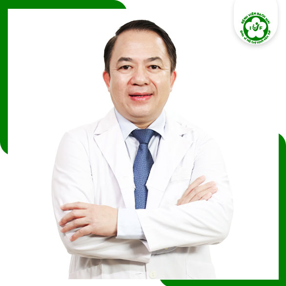
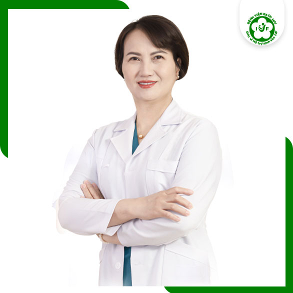

<section class="expert_ivf_1_1_0">
    <div class="container">
        <div class="expert_ivf_1_1_0__box">
            <div class="expert_ivf_1_1_0__pic">
                
            </div>
            <div class="expert_ivf_1_1_0__item load fadeInRight">
                <div class="expert_ivf_1_1_0__text">
                    CHUYÊN GIA TUYẾN ĐẦU VỀ HỖ TRỢ SINH SẢN TẠI VIỆT NAM - 28 NĂM KINH NGHIỆM
                </div>
                <div class="expert_ivf_1_1_0__name">
                    PGS.TS.BS. PHẠM BÁ NHA
                </div>
                <div class="expert_ivf_1_1_0__detail">
                    <p> <span class="icon"></span> Người đặt nền móng xây dựng Đơn vị Hỗ trợ sinh sản IVF Bệnh viện
                        Bạch
                        Mai</p>
                    <p> <span class="icon"></span> Một trong những Bác sỹ hỗ trợ sinh sản nổi tiếng nhất miền Bắc
                    </p>
                    <p> <span class="icon"></span> Được tu nghiệp tại nhiều nước trên Thế giới: Pháp, Bỉ, Séc, Mỹ...
                    </p>
                    <p> <span class="icon"></span> Trưởng khoa Phụ sản - Bệnh viện Bạch Mai</p>
                    <p> <span class="icon"></span> Trưởng Đơn vị Hỗ trợ sinh sản IVF - Bệnh viện Bạch Mai</p>
                    <p> <span class="icon"></span> Được Nhà nước công nhận chức danh Phó giáo sư Y học chuyên ngành
                        Sản
                        phụ khoa năm 2010</p>
                </div>
            </div>
        </div>
        <div class="expert_ivf_1_1_0__box">
            <div class="expert_ivf_1_1_0__item load fadeInLeft">
                <div class="expert_ivf_1_1_0__text">
                    CHUYÊN GIA HỖ TRỢ SINH SẢN, MIỄN DỊCH VÀ SINH HỌC PHÂN TỬ - 13 NĂM KINH NGHIỆM
                </div>
                <div class="expert_ivf_1_1_0__name">
                    TS.BS. NGUYỄN THỊ VÂN ANH
                </div>
                <div class="expert_ivf_1_1_0__detail">
                    <p> <span class="icon"></span> Trưởng phòng Lab Đơn vị Hỗ trợ sinh sản IVF Bệnh viện Bạch Mai
                    </p>
                    <p> <span class="icon"></span> Tiến sĩ phụ trách LABO IVF về phôi học và di truyền</p>
                    <p> <span class="icon"></span> Thực hiện được hầu hết các kĩ thuật hỗ trợ sinh sản tiên tiến
                        nhất
                        trên Thế giới</p>
                    <p> <span class="icon"></span> Chứng chỉ Sinh học phân tử - Đại học Y Kanazawa, Nhật Bản</p>
                    <p> <span class="icon"></span> Chứng chỉ Thụ tinh trong ống nghiệm - Bệnh viện Ajou, Hàn Quốc
                    </p>
                    <p> <span class="icon"></span> 13 năm kinh nghiệm trong lĩnh vực Hỗ trợ sinh sản, Miễn dịch và
                        Sinh
                        học phân tử</p>
                </div>
            </div>
            <div class="expert_ivf_1_1_0__pic">
                
            </div>
        </div>
    </div>
</section>